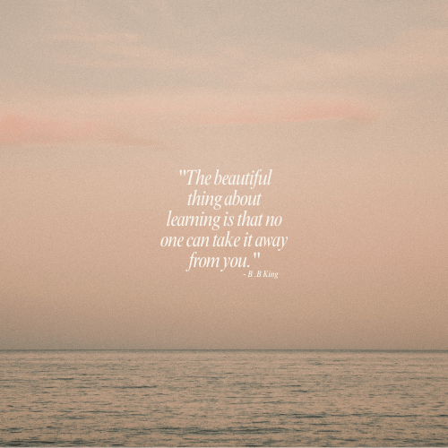

During each placement, I’ve embraced the opportunity to design hands on lessons and adapt my approaches to suit different learners and school contexts. I enjoy finding creative ways to adapt both Industrial Technology and Food Technologies into meaningful learning experiences, making sure students can see the relevance of what they’re creating. Whether it’s guiding a timber project from concept sketches to final products or teaching practical food preparation skills, I aim to make learning active, engaging, and connected to real world applications. These experiences have helped me refine my ability to plan, deliver, and reflect on lessons that build student confidence, technical skills, and a genuine enthusiasm for learning.
One of my favourite quotes is shown below by B.B. King. I connect deeply with this because it reminds me that education is a lifelong gift and how it empowers individuals far beyond the classroom and stays with them no matter the challenges they face. I want my students to feel this same sense of ownership over their learning and to leave my classes with skills and knowledge they know are truly theirs.
| School | Subjects Taught | Year Level |
|---|---|---|
| St George Christian School | Stage 4 Industrial Technology Timber | Year 7 |
| St George Christian School | Stage 5 Industrial Technology Timber | Year 9 |
| St John Bosco College | Stage 4 Industrial Technology Timber | Year 8 |
| St John Bosco College | Stage 5 Industrial Technology Timber | Year 10 |
| Lucas Heights Community College | Stage 4 Industrial Technology Engineering | Year 8 |
| Lucas Heights Community College | Stage 5 Industrial Technology Timber | Year 9 |
| Lucas Heights Community College | Stage 5 Industrial Technology Timber | Year 10 |
| Lucas Heights Community College | Stage 5 Food Technology | Year 10 |
| Lucas Heights Community College | Stage 4 Food Technology | Year 8 |